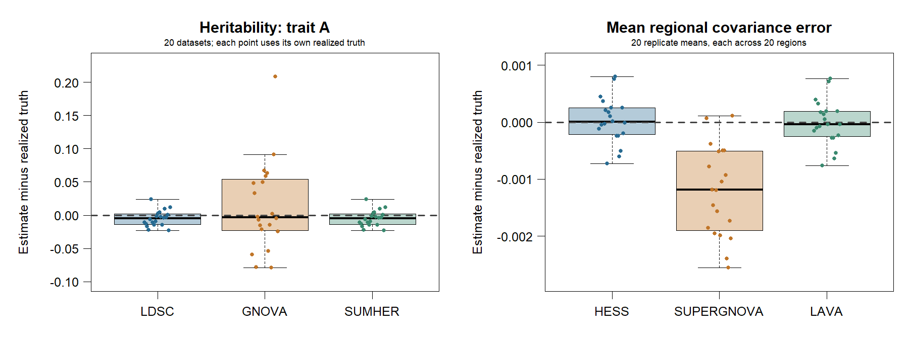

AI-assisted research, methods, software and teaching
Peter Sørensen
Center for Quantitative Genetics and Genomics, Aarhus University
What is AI?
Artificial intelligence
The broad field of building systems that perform tasks associated with human intelligence
Machine learning and deep learning
Methods that learn patterns from data. Deep learning uses neural networks with many layers
Generative AI
Models that generate text, code, images, audio or other content
AI assistants and agents
Systems built around generative AI that can work with users, files and tools. Agents can carry out multistep tasks
This presentation focuses on AI assistants and agents used for data analysis, method and software development, and teaching.
People use the term AI in different ways. Some think of machine learning or deep neural networks used to analyse data. Others think primarily of generative tools such as ChatGPT.
Machine learning covers methods that learn patterns from data. Deep learning is a form of machine learning based on neural networks with many layers. Modern generative AI is largely based on deep learning, but its purpose is to generate new content rather than only produce predictions.
Assistants interact with users and may have access to files and tools. Agents can use these capabilities to carry out more complex, multistep tasks.
This presentation concerns practical AI-assisted work. Applying machine learning as the scientific method being studied is outside its scope.
How researchers use generative AI
Writing and communication
Draft, revise, translate and shorten text
Literature work
Find relevant papers, summarise them and compare their conclusions
Data analysis
Inspect data, write code, make figures and explain results
Teaching
Develop slides, exercises, examples and explanations
Administration
Prepare emails, meeting notes, plans and reports
Writing and literature review are common entry points. The same technology can also contribute directly to mathematical, analytical and software work.
Many researchers first encounter generative AI as a writing assistant. It can also help identify literature, organise information, write analysis code and develop teaching material.
These uses still require review. Literature searches must be checked against the original sources, and scientific claims must not be accepted simply because the generated text sounds convincing.
My own use extends further into method and software development. That is the main focus of the following slides.
Areas of AI-assisted work
Data analysis
An analysis script and report
A reproducible analysis workflow
Method development
A statistical model or algorithm
A clearly defined method with validation evidence
Software development
R and C++ code, interfaces and documentation
Tested and maintainable software components
Teaching
Slides, simulations and worked examples
Editable teaching materials
AI can help with mathematical reasoning, coding, analysis and documentation. Researchers set the scientific direction, review the decisions and determine what evidence is sufficient.
These activities are connected but distinct. A data-analysis question may reveal the need for a new statistical method. The method must then be translated into reliable software before it can be used routinely. A validated implementation can support new analyses and become a teaching example.
AI is particularly useful at the connection between mathematics and software. It can help examine equations, compare algorithms, implement them in R or C++, and prepare numerical checks. Researchers define the scientific problem, review the statistical and computational decisions, and decide what evidence is required.
Using and extending the infrastructure
Use existing capabilities
Inspect the data and available tools
Specify the scientific model
Run and assess the analysis
Save the script and report
Add a missing capability
Identify the limitation
Define the required method or computation
Implement it using existing components
Validate and document the extension
Each completed project can improve the infrastructure available to the next.
AI assistants can work with the existing platforms rather than starting each project from scratch. They can inspect the available functionality, run analyses, modify code, add interfaces and prepare documentation.
Researchers remain responsible for defining the scientific problem, reviewing the statistical and computational decisions, and deciding whether the evidence is sufficient.
Data analysis infrastructure: gact
How can we make data from different sources usable in the same analysis?
Prepare and connect
Detect and validate data structures
Harmonise GWAS summary statistics
Add biological annotations
Record reusable ingestion steps
Analyse and interpret
Connect variants with genes and pathways
Use established statistical methods
Trace results back to their sources
Preserve the complete analysis workflow
The value comes from making data usable together.
gact contains schema detection, normalisation and validation of GWAS summary statistics, ingestion recipes, biological annotation sets and database access. Existing tutorials connect these resources to gene analysis, fine-mapping and pathway analysis, including methods supplied by qgg.
This example concerns data preparation, connection and interpretation. It does not imply that every statistical method belongs within gact or that all four platforms already form one integrated pipeline.
Simulation for method development: gsim
How well does a method recover known quantities under different scenarios?
Define the scenario
Pedigree and population structure
Genetic architecture and effects
Phenotypes and environmental variation
Quantities that the method should recover
Assess the method
Compare estimates with known truth
Examine uncertainty and failures
Change the scenario and repeat
Identify where the method struggles
Simulation helps us develop, compare and refine methods under conditions where the truth is known.
gsim provides simulation infrastructure rather than owning every benchmark. It supports pedigrees, genotype and phenotype simulation, multiple genetic architectures and retained simulation truth. Study designs and evaluation metrics belong in the assessment workflow, for example sblrbench.
Our 10,000-animal pedigree examples use simulation to compare estimates and breeding values with known quantities. Replicated scenarios assess statistical behaviour. Independent small numerical references still provide a separate check of the implementation.
Software from algorithms to interfaces: gsuite
User interface
R functions such as gfit() and gvc()
Reusable model components
Covariance models, estimation and prediction
Native C++ and shared libraries
Solver interfaces, factor reuse and diagnostics
Numerical algorithms
Sparse solves and selected inverse entries
Development connects statistical ideas to efficient and usable software.
Read the layers from bottom to top. Development includes numerical algorithms, native C++, shared libraries, reusable model components and the R interface. CHOLMOD and PARDISO are established external solvers that we build on. Our selected inverse uses retained CHOLMOD factors. The YAMS analogy concerns computing needed inverse entries, not a YAMS dependency.
greml owns model computations and gsolve owns solvers. The R interface exposes supported combinations. A Python interface remains a possible future addition and is therefore not presented here as a current capability.
The libraries behind gsuite
gsuite R interface: models, computational tasks and results
greml Mixed models, REML estimation and prediction
gsolve Numerical solvers, factor reuse and selected inverse calculations
gmat Matrix operations, genotype panels and linkage disequilibrium
gbits Compact genotype storage and operations on packed data
gcorr Genetic correlation calculations
gscore Genetic scoring and prediction
gbayes Bayesian regression models
gsolve connects our model computations to established numerical libraries:
CHOLMOD / SuiteSparse and PARDISO → sparse matrix factorisation and linear solves.
This is a responsibility map, not a complete dependency graph. gsuite exposes selected capabilities through its R interface. gsim is a separate R package for simulation.
CHOLMOD and PARDISO are external libraries, not software developed by us. gsolve provides interfaces that allow supported model computations to use these sparse numerical backends. Other dense and iterative routes also exist.
Our selected-inverse implementation builds on retained CHOLMOD supernodal factors. It calculates required inverse entries without forming the full dense inverse. It does not use PARDISO for selected inversion.
AI-assisted development includes the algorithms and infrastructure around these external libraries, their integration, and the statistical and R layers.
Reusable computational building blocks in gsuite
Reused quantities
MME solutions and quadratic forms
Log determinants from factorizations
Selected inverse entries for trace terms
Derivative solves and cross-products
REML calculations
Restricted log likelihood
Score: first derivatives
Information: second-order curvature
Average Information for parameter updates
Reuse the same building blocks for estimation, prediction and uncertainty.
The model specification supplies the design matrices and covariance components. From these, we assemble the mixed-model coefficient matrix and right-hand side. In the standard notation, the coefficient matrix contains terms formed from X, Z, inverse residual covariance and inverse random-effect covariance.
The sparse factorization supports several calculations. We use it to solve the mixed-model equations and obtain quadratic forms. The factorization also provides the coefficient-matrix log determinant. The covariance components provide the other determinant terms required by the restricted likelihood.
Selected inverse entries provide the trace terms needed by the direct sparse route. Derivative solves and cross-products contribute to the score and information calculations.
The score contains the first derivatives of the restricted likelihood. Observed and expected information describe second-order curvature. The Average Information matrix provides an efficient curvature calculation for updating the covariance parameters.
After each update, we rebuild the parameter-dependent parts and repeat the calculation. At the final covariance estimates, the same solver infrastructure supports prediction and uncertainty calculations.
Within the ecosystem, gsuite provides the R-facing model specification, greml owns the mixed-model and REML calculations, and gsolve provides factorization and solver operations. This slide describes the sparse direct route. Other backends may use different numerical building blocks.
Mathematical core of the same REML calculation
Mixed model
\[
y=X\beta+Zu+e,\qquad u\sim N(0,G),\quad e\sim N(0,R)
\]
Mixed-model equations
\[
C(\theta)
\begin{bmatrix}\widehat\beta\\\widehat u\end{bmatrix}
=
\begin{bmatrix}X^\top R^{-1}y\\Z^\top R^{-1}y\end{bmatrix}
\]
\[
C(\theta)=
\begin{bmatrix}
X^\top R^{-1}X & X^\top R^{-1}Z\\
Z^\top R^{-1}X & Z^\top R^{-1}Z+G^{-1}
\end{bmatrix}
\]
Determinants for REML
\[
\begin{aligned}
&\log|V|+\log|X^\top V^{-1}X|\\
&\qquad=\log|R|+\log|G|+\log|C|
\end{aligned}
\]
REML quantities
\[
\begin{aligned}
V &= ZGZ^\top+R\\
P &= V^{-1}-V^{-1}X(X^\top V^{-1}X)^{-1}X^\top V^{-1}
\end{aligned}
\]
\[
\begin{aligned}
-2\ell_R(\theta) &= \mathrm{constant}+\log|V|\\
&\quad+\log|X^\top V^{-1}X|+y^\top Py
\end{aligned}
\]
For \(V_i=\partial V/\partial\theta_i\) ,
\[
s_i=\frac12\left[y^\top PV_iPy-\operatorname{tr}(PV_i)\right]
\]
\[
\mathcal I_O=-\frac{\partial^2\ell_R}{\partial\theta\,\partial\theta^\top}
\]
\[
\mathcal I_{AI,ij}=\frac12 y^\top PV_iPV_jPy
\]
Solves, selected inverse entries and derivative blocks supply these quantities.
Independent \(u,e\) ; positive-definite \(G,R\) ; full-rank \(X\) . AI form shown for covariance components entering \(V\) linearly.
Architecture · Numerical foundation
The covariance parameters are collected in theta. They determine the residual covariance R, the random-effect covariance G, the marginal covariance V and the mixed-model coefficient matrix C.
The mixed-model equations provide estimates and predictions without forming the dense marginal covariance matrix V. The determinant identity expresses the two marginal REML determinant terms through R, G and the sparse mixed-model coefficient matrix C.
The restricted likelihood combines these determinant terms with the quadratic form y transpose P y.
For each parameter, V sub i is the derivative of V with respect to that parameter. The score is the first derivative of the restricted likelihood. It contains a quadratic term and a trace term.
The observed information is the negative second derivative of the likelihood. The Average Information matrix provides the curvature used for parameter updates. For variance components that enter V linearly, its familiar form is one half y transpose P V sub i P V sub j P y.
The implementation does not need to construct the dense P matrix. Sparse MME solves, selected inverse entries and derivative calculations provide the required quantities.
For nonlinear covariance parameterisations, transformation and chain-rule terms must also be included. The equations shown here describe the core variance-component formulation.
gsuite versus DMU: agreement and runtime
Numerical agreement
50,000 animals
Maximum covariance-estimate difference below \(4.3\times10^{-8}\) .
Prediction correlations essentially 1 on 1,000 preselected animals.
Competitive runtime on these three tested models.
gsuite 0.29.0 and DMU 5.6. Each bar represents one execution. The work boundaries differ: gsuite fitting versus DMU preprocessing and fitting.
The numerical results provide evidence for these frozen direct pedigree REML models. Covariance agreement covers the saved parameters. Prediction correlations exceed 0.999999999998 on the predeclared first 1,000 pedigree-coded animals, not all 50,000. Likelihood constants remain unreconciled. Timings are descriptive single runs with different work boundaries, so this is not a general speed claim or qualification of all current gsuite routes.
Teaching infrastructure: gteach
A common structure connects learning objectives with editable teaching material.
Source material
Learning objectives
R and Quarto source
Code, data and exercises
Speaker notes
Reusable outputs
Lecture slides
Worked tutorials
Interactive examples
Narrated presentations
We can develop the material together, then revise and reuse it across courses.
This is infrastructure for teaching, not only a collection of slides. The course scaffolding provides a consistent home for slides, notes, tutorials, exercises, apps and data. Narration tools use the speaker notes. Existing R and Shiny examples include genetic drift, selection and Hardy-Weinberg equilibrium.
AI helps develop both the tools and the teaching content. We choose the learning objectives, review explanations and code, and check narration. The rename is planned; the current repository and links remain qgteach.
Where will AI lead us?
What is likely to change
Writing, coding and analysis will become faster
More groups will develop advanced methods and software
AI assistants will perform increasingly complex tasks
Research roles and expectations will change
Questions for our programme
Which expertise and resources will distinguish us?
How should we combine AI with our data and infrastructure?
Which capabilities should we develop and share?
How should training, review and responsibility change?
What should we change now to remain scientifically distinctive as AI becomes part of research?
AI is already part of research, and its capabilities will continue to develop. Routine use of writing assistants or code generation will become common. The strategic question concerns how this changes our research and what will remain distinctive.
Scientific questions, domain knowledge, trusted data, critical evaluation and responsibility will remain important. Our shared platforms provide one possible advantage because they capture expertise in infrastructure that researchers and AI assistants can use and extend.
We should discuss which capabilities we need, how our roles may change, and where we should invest to remain scientifically strong.
From a computational need to a component
Need: Obtain required inverse entries without forming a full dense inverse.
Build small references
Dense inverse and scalar Takahashi calculations in C++
Implement the efficient algorithm
Selected inversion using retained CHOLMOD factors
Compare in native tests
Check requested entries against both references
Check computational behaviour
Factor reuse, thread agreement and retained solves
Integrate and assess
Supported model computations and the R workflow
Reference and production calculations are both native C++.
The development pattern is to establish a small reference, implement the efficient algorithm, compare them, and then check broader computational and user workflows. This describes the documented validation structure rather than asserting the exact historical order of every implementation step. gsolve/docs/testing.md and tests/test_supernodal_selected_inverse.cpp document and implement two small C++ references: a dense inverse and a separate scalar Takahashi recurrence. Requested entries from the production supernodal route are compared with both. The scalar reference is test-only, not an installed production fallback. Additional assertions check repeated factorisation, thread agreement, and preservation of retained solves and log-determinants. CHOLMOD is external; our production route uses its retained supernodal factors without forming the full dense inverse. PARDISO is not used for this selected inversion. These are test contracts, not a claim that every current test passes.
Different checks answer different questions
Mathematics and special cases
Does the formulation represent the intended model?
Small native reference versus production algorithm
Do separate computational approaches agree?
Repeated simulation with known truth
How well does the method recover quantities across scenarios?
Comparison with other software
Do results agree for matched models and settings?
Complete user workflow
Can the interface produce an interpretable, reproducible result?
Independence comes from a separate computational approach, not a different programming language.
These checks complement one another. Both reference and production code can be C++. greml retains small dense, analytical and finite-difference checks in native tests; gmat uses explicit dense correlation and LD calculations; gbits compares optimised implementations with scalar references. Their testing.md guides describe the assertions and reference limitations. Not every comparison has the same degree of independence: two wrappers over the same engine do not provide an independent numerical reference. Agreement between programs requires matching models, conventions and settings. Simulation can assess bias, uncertainty and prediction, but the generating model and studied scenarios limit what we learn. Runtime comparisons require explicit work boundaries. Define tolerances and acceptance criteria before interpreting results, and record the model, route and scale covered by the evidence.
Where human judgement enters
Scientific decisions
Which question matters?
Which assumptions fit the study?
Which quantities should we estimate?
What can the results support?
Development decisions
Which approximations are acceptable?
What should be implemented or reused?
Which checks are sufficient?
When is a result ready to share?
AI can help examine each decision. We remain responsible for accepting it.
Human judgement is present throughout the process, not only in a final review. The researcher contributes study knowledge and statistical reasoning; software developers contribute computational and engineering judgement. AI can propose alternatives, expose assumptions, implement choices and assemble checks. Important decisions should remain visible in model definitions, code review, documentation and the interpretation of the evidence.
What remains after the conversation?
A reusable analysis or method
Model definition and assumptions
Code and an executable example
Tests and numerical evidence
Data identity, settings and versions
Results and documented limitations
Explanations and teaching material
The next researcher should be able to understand and use the work without reading the chat.
Conversation helps us develop the work, but it is not a substitute for its reproducible outputs. Keep the relevant data provenance, source revisions, settings and random seeds alongside results. Documentation should describe the final implementation and its limitations. Store reviewed evidence rather than every temporary experiment. This is what lets progress in one project benefit another, with or without the same assistant.
A concrete case: GWAS summary statistics
The question: can existing building blocks support a family of methods for heritability and genetic correlation?
Genome-wide and annotation-based
LDSC, GNOVA, SumHer
Regional
HESS/rho-HESS, SUPERGNOVA, LAVA
Conditional relationships
LAVA regression and partial genetic correlations
Native calculations in gcorr , reusable LD resources in gmat , numerical components in gsolve , and a common gsuite R interface .
The outcome includes working examples, diagnostics and documented limits.
This is a concrete example of developing methods with an assistant. The starting point was existing software, including an LDSC core and sparse LD machinery. The question above is a summary of the initiating discussion, not a verbatim quote.
These are implementations of established method families, with bounded supported options. They are not claims of complete parity with every original package. The common interface preserves different meanings of annotation components, category totals and regional quantities, and method-specific uncertainty.
How the researcher and assistant worked
Define the next capability
Set the scientific question and scope
Inspect equations and existing components
Implement and check
Review assumptions and challenge results
Write native code; compare small numerical oracles
Connect and evaluate
Decide what is supported and what needs investigation
Add the R interface, examples and simulations
Short, reviewed steps: specify → implement → test → discuss → commit.
The checks included independent calculations, selected upstream comparisons, R/native agreement and simulated data with known truth.
The conversation repeatedly narrowed scope: native libraries first, reuse existing components, keep the interface simple, and do not equate successful execution with statistical validity. The researcher chose the next milestone and reviewed the result before committing. The assistant investigated failures and updated code, tests and documentation.
Evidence was collected as the work progressed. For example, native uncertainty evaluations exposed undercoverage in some settings. Those limits were recorded, not removed by presenting only passing examples. Numerical oracles were small, independent reference calculations, distinct from the production algorithms.
What the development record shows
21 August
Initial native LDSC core already in place
11 September
LDSC extensions and reference comparisons
12–13 September
Additional method families, multivariate extensions and evaluations
14 September
LDlist, R interfaces, aligned results and the simulation tutorial
Latest package tests: 2,264 checks passed.
20 simulated datasets: about 5.4 minutes , including data generation, LD preparation and fitting.
Calendar dates describe recorded development; human hours and time saved were not measured.
The documented expansion spans 11–14 September, but substantial infrastructure and an LDSC implementation predate it. Do not describe the whole ecosystem as having been built from scratch in four days.
Evidence: gcorr commits 96a8b88 (21 August), 066be5e and c8fa52d (11 September), 35618e7/eaba10e/b4e7a14/159a394/7ee5ea6 and further extensions (12 September), 4b8bef5 (13 September), 666c3ae/fdca4f9 (14 September). gsuite commits 063dba6, 667cb1d, 57e0acf, 10df9bc and 2c7ceeb record the R workflow and test follow-up. The curated discussion record is docs/ldsc-development-record.md.
The 2,264 testthat checks passed against the existing isolated installation; the corrected smoke test and remaining standalone tests also passed. This is not a clean new source-tarball qualification: compiler and package notes remain.
The 5.4 minutes is simulation workflow wall time, not development or human time. The presenter considers comparable pre-AI work a task of months. That is a personal assessment, not a measured counterfactual or an established speedup.
How much assistant time did this take?
Saved task records from 11–14 September 2026 :
Native methods, discussion and evaluations
10 h 24 min
LD reference resources, R interfaces and package checks
4 h
Simulation examples, website updates and slides
35 min
Total assistant task time About 15 hours
From method development to a shared R interface and worked examples, using existing computational building blocks.
Reconstructed from 254 saved task intervals, including automated overnight continuation tasks. Gaps between tasks are excluded.
This is elapsed assistant task time, including builds and tests. It does not measure human review time or the time previously spent developing the underlying infrastructure. Background computation outside active tasks is not fully measured.
It also does not establish how long the same work would have taken without AI. Statistical limitations remain documented.
The reconstruction is recorded in docs/ldsc-development-record.md. The estimate ends before the timing discussion and this slide update.
The simulations also reveal differences

All 1,380 expected point estimates were available. The SUPERGNOVA shift gives a specific result to investigate.
Each dataset has two continuous traits, 10,000 disjoint GWAS individuals per trait, 4,000 independent reference individuals and 20 regions. Each error is relative to its own realized population truth. The left panel shows h2 for trait A. The right panel averages regional covariance errors within each dataset; it does not treat the 400 regions as independent replicates. All points are shown.
Under this design, LDSC and SumHer were almost identical. GNOVA was more variable. HESS and LAVA had small mean regional errors; SUPERGNOVA had mean error -0.001219 and regional RMSE 0.004099, compared with about 0.002 for HESS/LAVA. The cause is not established by this small comparison. Component selection, finite reference LD and assumptions deserve focused investigation. Earlier native records also examined SUPERGNOVA selection sensitivity; this is a new connected workflow observation, not the first discovery of a possible limitation.
One HESS regional SE was unavailable because its estimated matrices failed the uncertainty requirements. LAVA covariance SEs were unavailable for this call. Twenty datasets do not establish general calibration or rank the methods.
What could become a research contribution?
Reusable infrastructure, implemented
Shared LD resources, named covariance results and common numerical components
Native extension, implemented
Annotation-specific genetic regression and partial correlations from GNOVA covariance estimates
Research question to evaluate
Do conditional genetic relationships differ between annotations?
Existing methods can become building blocks for new questions.
Statistical novelty still needs a literature comparison and evidence. Shared code alone is not a new statistical method.
The native annotation extension is documented in gcorr/docs/annotation-multivariate.md and its reliability study. It reuses named genetic covariance matrices for regression and partial correlations, with paired-delete uncertainty. Numerical checks include larger conditioning sets and overlapping categories; statistical validation remains bounded. This extension is not being claimed as exposed by the current gsuite annotation R interface.
Overlapping annotation totals are not independent components and must not be summed. Conditioning describes genetic association, not a causal effect. Weak components, nearly singular predictor covariance and uncertainty calibration remain substantive issues. Any publishable novelty must be distinguished from existing methods and evaluated, rather than inferred from a common interface.
The demonstrated contribution is a reusable implementation and evaluation framework, developed through scientific direction and assistant-supported work.